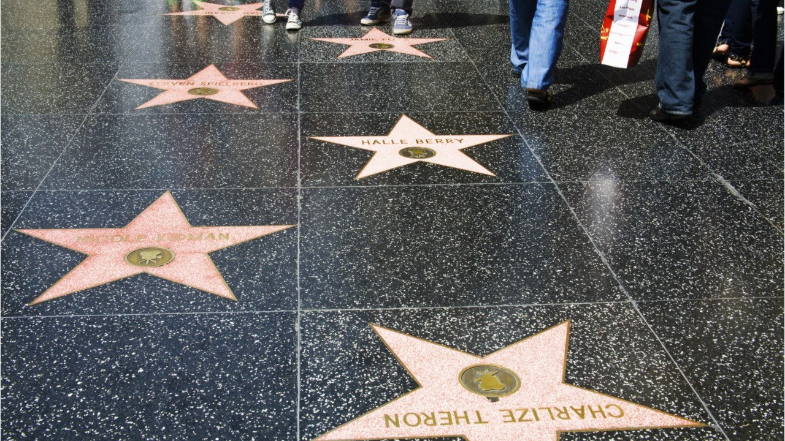
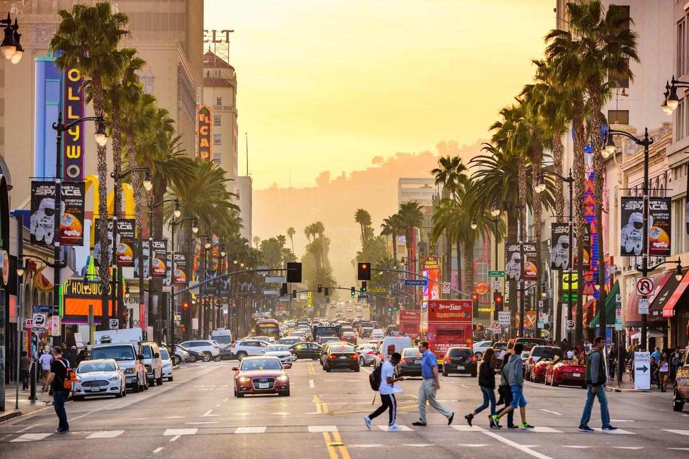
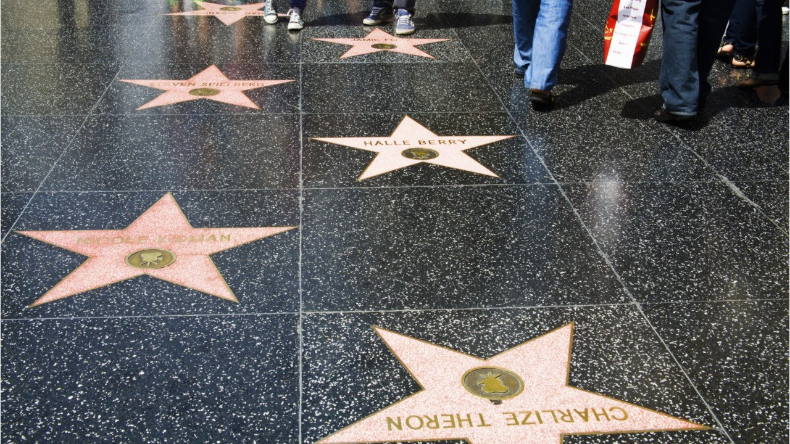
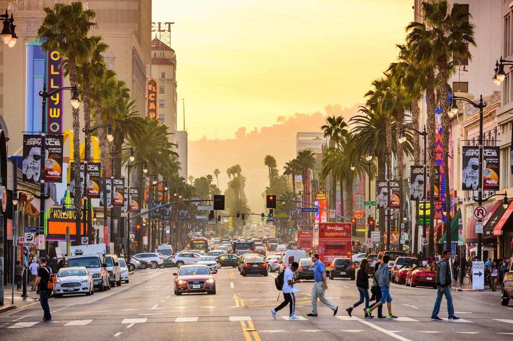
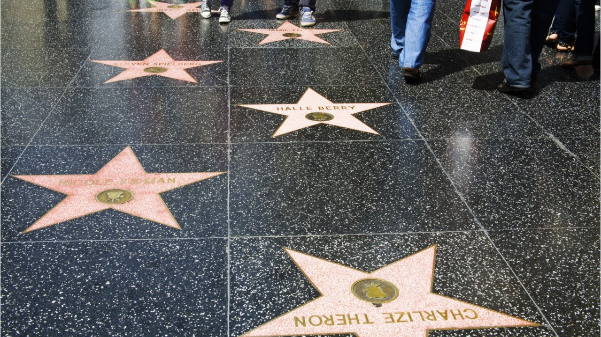
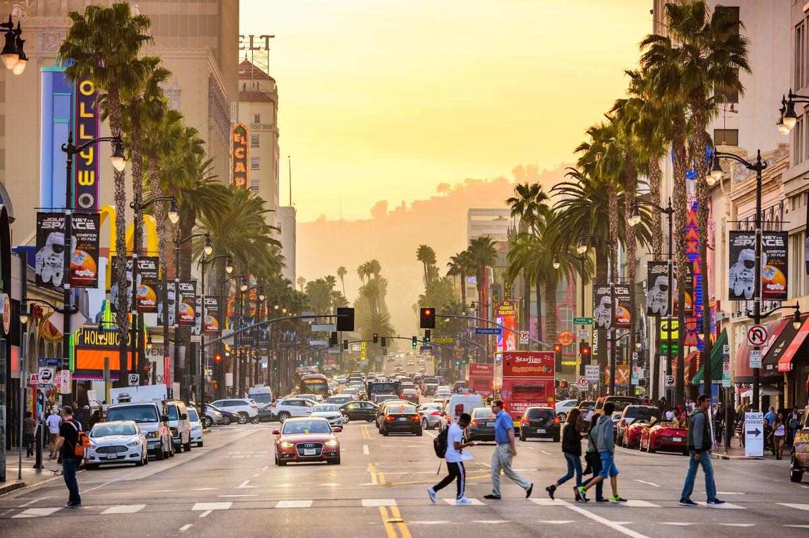

Los Angeles County, CA is where you can find fame and fun. It has a wide range of surroundings such as beaches, urban areas, and nature.


Hollywood is full of stars, as in celebrities and pink stars on the Walk of Fame. While on Hollywood Boulevard, you should visit the numberous other sites. You can go to the Hollywood Wax Museum, a theater, or shop 'til you drop at the mall.

Universal Studios is also in Hollywood, but it deserves its own section. This famous attraction is a combination of an amusement park and film studios/sets. All of the rides have a theme based on a specific movie or franchise. Some of my favorite rides are the Jurassic Park ride, the Simpsons ride, and the Revenge of the Mummy ride. An honorable mention is the Descicalbe Me ride. I haven't gone to the Harry Potter attraction yet, but it's on my bucket list. In addition, Universal Studios has shows daily, such as WaterWorld. Besides going on rides and eating, you must go on a studio tour! It's facinating. During the tour, you are riding in a trolly and go through different sets and experiences. Many of them are even dynamic, with moving robots.
A main attraction at Santa Monica Pier is Pacific Park, an amusement park with rides, arcade games, and food stalls. From afar, the two most visible rides are the ferris wheel and roller coaster. At night, the ferris wheel lights up in colorful moving patterns, acting as a mesmerizing light show.
Griffith Park is huge and contains green spaces and hiking trails. The observatory is a planatarium with a giant swinging pendulum, a theater, a cafe, and halls full of education exhibits. I actually ended up at Griffith Observatory by accident, and I'm glad I did. I was following google maps to the Hollywood Sign. I was able to see the Hollywood Sign in the far distance at the observatory.